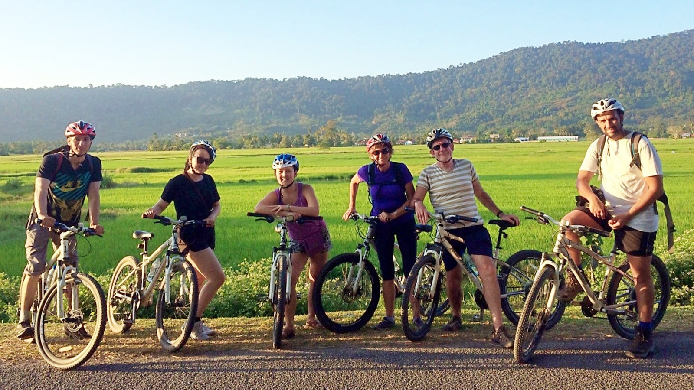
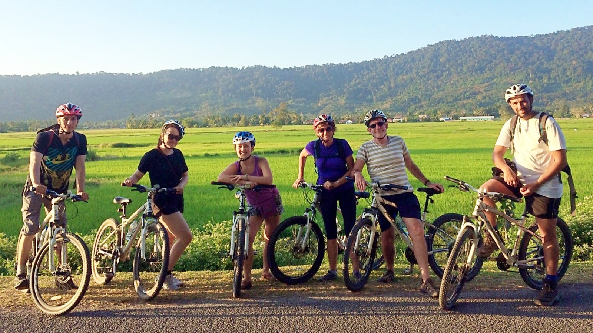

Cardio
Hvorfor er cardio vigtigt for vægttab?
Cardio er en af de bedste måder at forbrænde kalorier på,fordi det hjælper med at skabe et kalorieunderskud det vil sige, du forbrænder flere kalorier, end du indtager Sammen med en sund kost kan regelmæssig cardio accelerere dit vægttab ved at øge dit daglige energiforbrug. Cardioøvelser træner dit hjerte og lunger, så de arbejder mere effektivt, samtidig med at du forbrænder kalorier og fedt.
Effektive cardioøvelser til vægttab
Der findes mange typer cardioøvelser, og hvilken der er bedst for dig afhænger af din præference, fysiske form og mål. Det er vigtigt at sige at en god lang gåtur, kan være ligeså god som en kort løbetur. udover det, så har en højere intensitet har ikke nogen korrelation med tab af mere fedt, faktisk er Zone 2 udholdenhedsniveaut(hjerteslag på 60-70 %) den mest effektive måde at brænde fedt på. Her er nogle af de mest effektive cardioøvelser til vægttab: Final important text you want to emphasize.
Løb
Løb er en af de mest populære og effektive cardioøvelser for vægttab. Det forbrænder et stort antal kalorier og kan udføres næsten hvor som helst. Hvis du er nybegynder, kan du starte med at veksle mellem gang og løb, indtil din kondition forbedres. Kalorieforbrug: Ca. 600-900 kalorier pr. time (afhænger af hastighed og kropsvægt). Fordel: Du kan tilpasse intensiteten ved at variere tempo og distance.
HIIT (High-Intensity Interval Training)
HIIT er ekstremt effektivt til vægttab på grund af de korte, intensive træningsperioder, der veksler med hvile. Dette øger både din forbrænding under og efter træning, kendt som "efterforbrænding". En typisk HIIT-session kunne være 30 sekunder sprint efterfulgt af 1 minut gang, gentaget i 20 minutter. Kalorieforbrug: Ca. 500-700 kalorier pr. time, men den efterfølgende kalorieforbrænding er ofte højere. Fordel: HIIT tager kortere tid end traditionelle cardioøvelser og giver en stor kalorieforbrænding.
Cykling
Cykling er en lav-impact øvelse, hvilket betyder, at den er skånsom for dine led. Det er effektivt til at forbrænde kalorier og forbedre din kondition. Du kan vælge at cykle udendørs eller bruge en stationær cykel indendørs. Kalorieforbrug: Ca. 500-800 kalorier pr. time, afhængigt af intensitet og terræn. Fordel: Skånsomt for leddene og kan let tilpasses dit fitnessniveau ved at ændre modstanden.
Svømning
Svømning er en helkropsøvelse, som ikke kun forbrænder kalorier, men også styrker musklerne. Det er særlig godt for personer, der har brug for en skånsom form for motion på grund af skader eller ledsmerter. Kalorieforbrug: Ca. 400-700 kalorier pr. time, afhængigt af svømmestil og intensitet. Fordel: Skånsom for led og muskler, samtidig med at du får en helkropstræning.
Sådan får du mest ud af din cardio for vægttab
1. Kombiner med styrketræning: Selvom cardio er effektivt til at forbrænde kalorier, bør du kombinere det med styrketræning for at bevare og opbygge muskler. Muskler øger din stofskifte, hvilket hjælper dig med at forbrænde flere kalorier i hvile. 2.Vær konsekvent: Regelmæssig cardio, som en del af en overordnet træningsrutine, er nøglen til at opnå og fastholde vægttab. Målet er 150-300 minutters moderat cardio om ugen, afhængigt af intensiteten. 3.Hold øje med intensiteten: Varier intensiteten af din cardio. Lange, moderate sessioner kan kombineres med kortere, intense sessioner (som HIIT) for at optimere din forbrænding. 4.Fokusér på kalorieforbrug: For at tabe sig er det nødvendigt at skabe et kalorieunderskud. Sørg for, at din kost understøtter dine vægttabsmål, ved at indtage færre kalorier end du forbrænder gennem motion og daglige aktiviteter.
 
